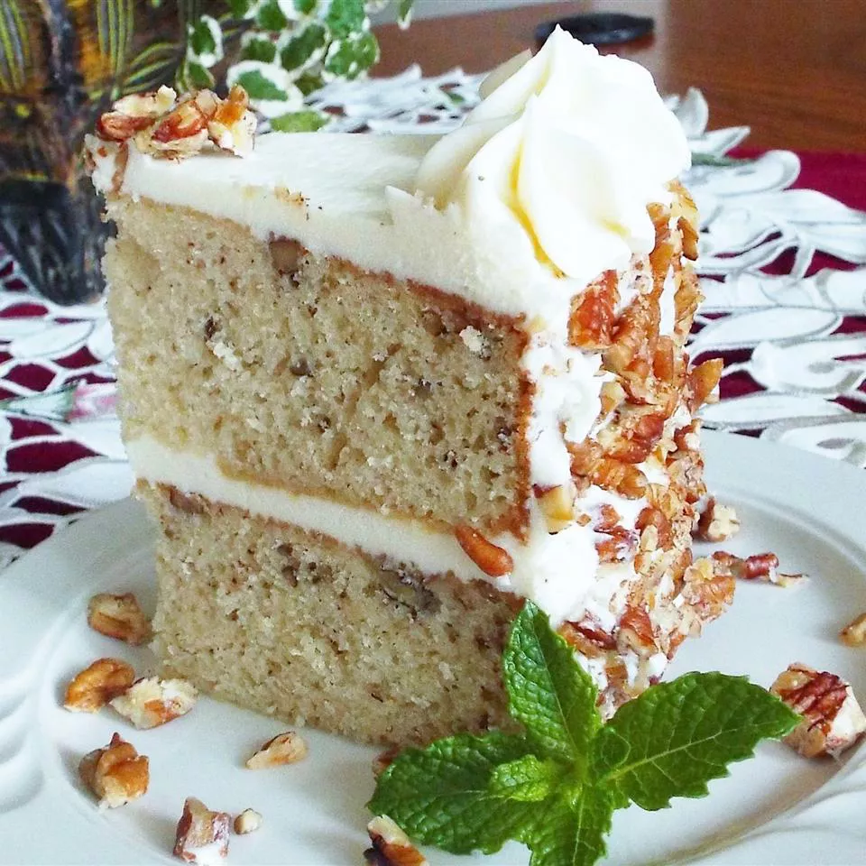

Italian Cream Cake

Description
Italian cream cake is a mouthwatering dessert that's sure to satisfy. It's
made with layers of rich, moist cake that are infused with a blend of
cream cheese, coconut, and pecans. The cream cheese frosting is light and
fluffy, with just a hint of tang!
Ingredients
Coconut Cake:
- 1 cup buttermilk
- 1 teaspoon baking soda
- ½ cup butter
- ½ cup shortening
- 2 cups white sugar
- 5 large eggs
- 1 teaspoon vanilla extract
- 1 cup flaked coconut
- 1 teaspoon baking powder
- 2 cups all-purpose flour
Cream Cheese Frosting:
- 8 ounces cream cheese
- ½ cup butter
- 1 teaspoon vanilla extract
- 4 cups confectioners' sugar
- 2 tablespoons light cream
- ½ cup chopped walnuts
- 1 cup flaked coconut
Steps
-
Preheat the oven to 350 degrees F (175 degrees C). Grease three 9-inch
round cake pans.
-
Make the cake: Combine buttermilk and baking soda together in a small
bowl; set aside.
-
Beat butter, shortening, and sugar together in a large bowl with an
electric mixer until light and fluffy. Mix in eggs, buttermilk mixture,
vanilla, coconut, baking powder, and flour; stir until just combined.
Pour batter into the prepared pans.
-
Bake in the preheated oven until a toothpick inserted into the center of
the cake comes out clean, 30 to 35 minutes. Cool in the pans for 5
minutes; transfer to a wire rack and let cool completely, 20 to 25
minutes.
-
Make the frosting (while cakes are cooling): Beat cream cheese, butter,
vanilla, and confectioners' sugar in a medium bowl with an electric
mixer until light and fluffy. Beat in cream, a little at a time, to
attain the desired consistency. Stir in walnuts and coconut. Spread
frosting between the cake layers and on the top and sides of cooled
cake.